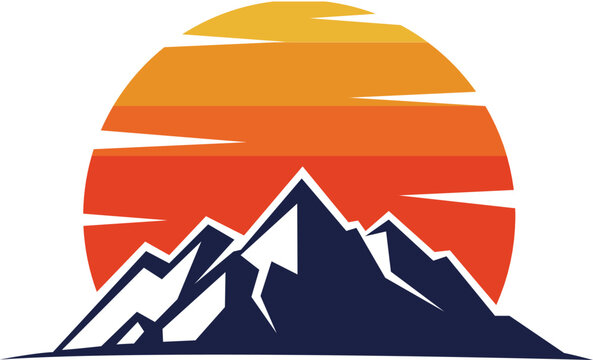

.webp)
.webp)

Trekking in the Annapurna region of Nepal os Widely considered among the world's premier mountain adventures. The region offers well-established
teahouse trails, dramtaic terrain transition - From subtropical Valleys to high-altitude cold deserts-and panoramic views of the Himalayas. Annapurna Base Camp
(ABC - 4,130 m) 5-Day Trek is a quick return trip to Annapurna-I (8091 m), the tenth highest mountain in the world above sea level. Moreover, the base camp falls
inside Annapurna Sanctuary, a high glacial basin lying 40 km directly north of Pokhara. The package is thus especially tailored for thrill seeking adventurers with
a very short span of time.
The trek usually begins from Kathmandu/Pokhara and heads towards Simrung to begin the trek. If the traveler has selected the option
form Kathmandu, they will be provided with an early morning flight on day one of the trip. Else you may also select the option for the trip to begin from Pokhara
.
annapurna is known as one of the most dangerous mountains in the world. The Annapurna Massif has a fatality rate of 32% among climbers, making it the deadliest of the eight-thousanders. The mountain is notorious for avalanches, which have claimed many lives over the years. Climbers attempting to summit Annapurna should be well-prepared, experienced, and aware of the risks involved.
| Pros | Cons |
|---|---|
| Stunning 360-degree views of the Annapurna mountain range | High altitude with potential risk of altitude sickness (AMS) |
| Diverse landscapes ranging from subtropical forests to alpine terrain | Teahouses can be very basic and overcrowded during peak seasons |
| Well-established trail networks with accessible teahouses along the route | Challenging terrain with steep stone staircases (e.g., Ulleri steps) |
| Rich local culture with opportunities to visit Gurung and Magar villages | Flight delays or cancellations at Pokhara due to unpredictable weather |
| Shorter duration and lower maximum altitude than Everest Base Camp | Cold weather and limited heating options in teahouse bedrooms |